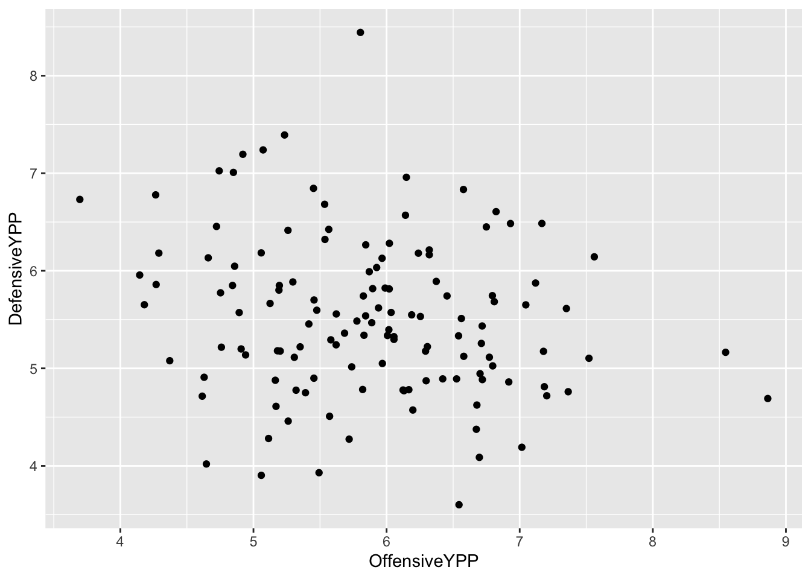
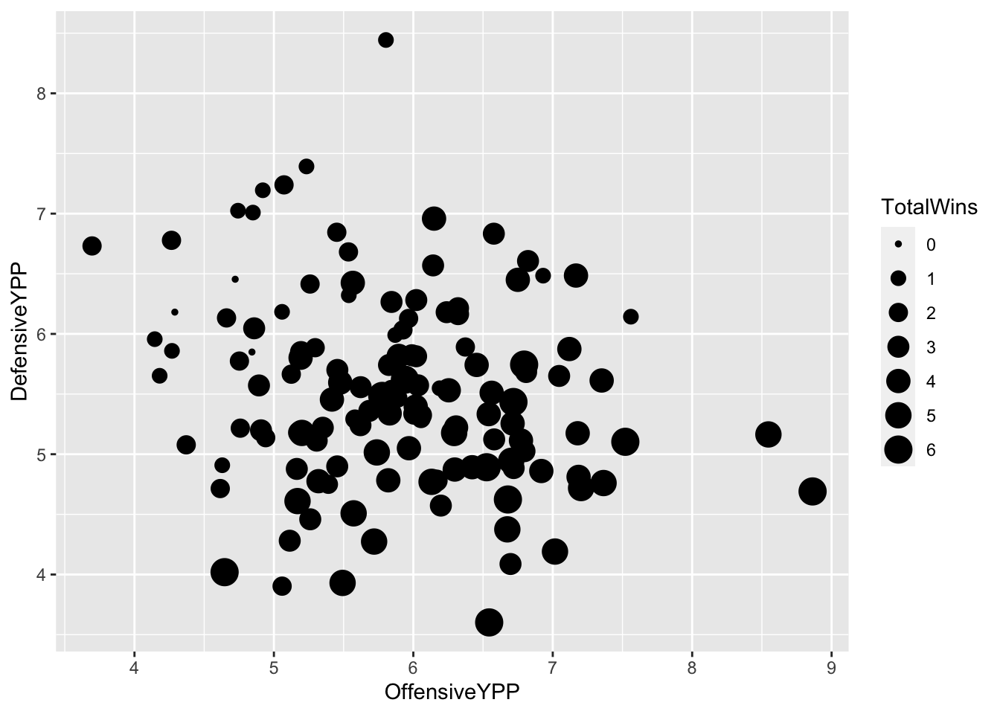
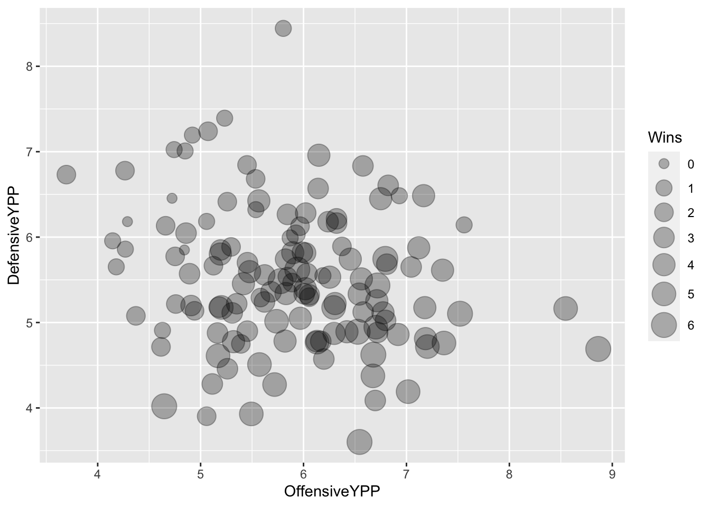
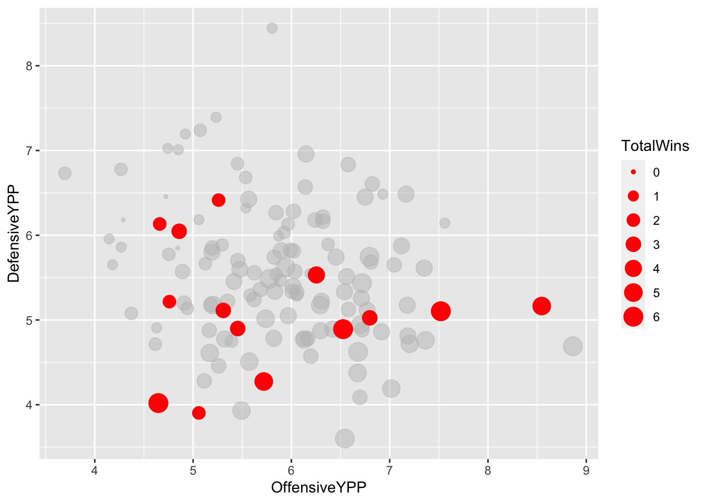
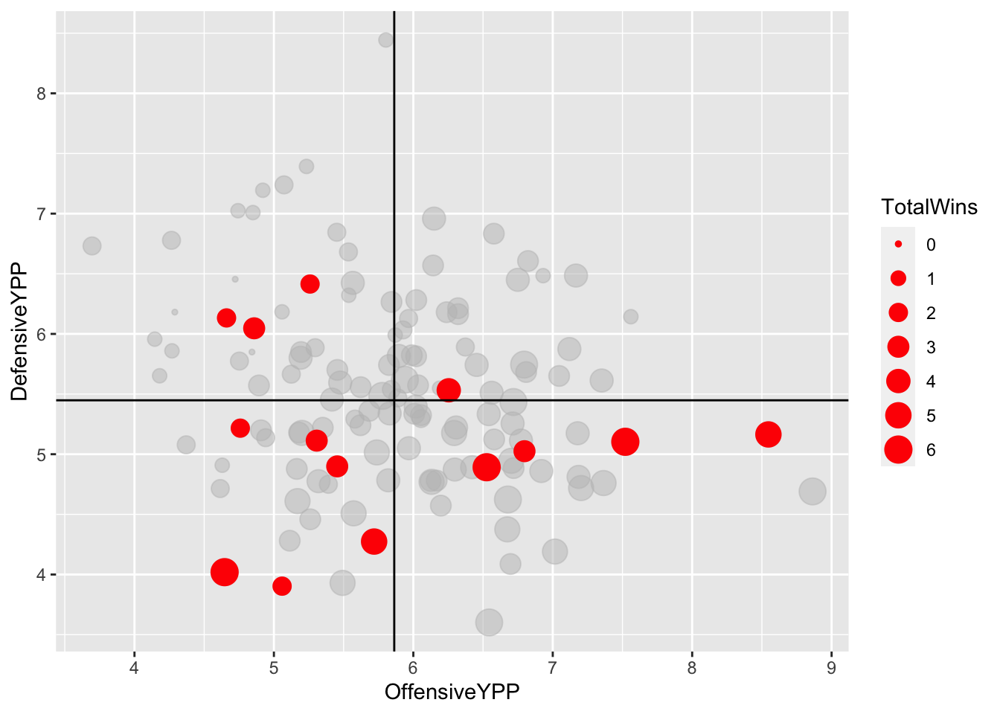
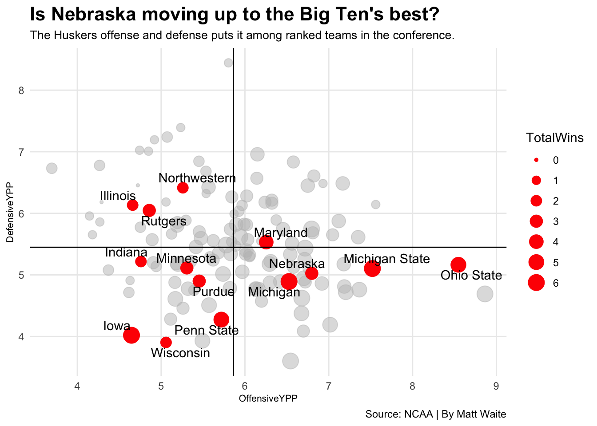

library(tidyverse)23 Bubble charts
Here is the real talk: Bubble charts are hard. The reason they are hard is not because of the code, or the complexity or anything like that. They’re a scatterplot with magnitude added – the size of the dot in the scatterplot has meaning. The hard part is seeing when a bubble chart works and when it doesn’t.
If you want to see it work spectacularly well, watch a semi-famous Ted Talk by Hans Rosling from 2006 where bubble charts were the centerpiece. It’s worth watching. It’ll change your perspective on the world. No seriously. It will.
And since then, people have wanted bubble charts. And we’re back to the original problem: They’re hard. There’s a finite set of circumstances where they work.
First, I’m going to show you an example of them not working to illustrate the point.
I’m going to load up my libraries.
So for this example, I want to look at where Big Ten teams compare to the rest of college football last season. Is the Big Ten’s reputation for tough games and defenses earned? Can we see patterns in good team vs bad teams?
I’m going to create a scatterplot with offensive yards per play on the X axis and defensive yards per play on the y axis. We can then divide the grid into four quadrants. Teams with high yards per offensive play and low defensive yards per play are teams with good offenses and good defenses. The opposite means bad defense, bad offense. Then, to drive the point home, I’m going to make the dot the size of the total wins on the season – the bubble in my bubble charts.
We’ll use this season’s college football games.
For this walkthrough:
And load it.
logs <- read_csv("data/footballlogs21.csv")Rows: 740 Columns: 54
── Column specification ────────────────────────────────────────────────────────
Delimiter: ","
chr (8): HomeAway, Opponent, Result, TeamFull, TeamURL, Outcome, Team, Con...
dbl (45): Game, PassingCmp, PassingAtt, PassingPct, PassingYds, PassingTD, ...
date (1): Date
ℹ Use `spec()` to retrieve the full column specification for this data.
ℹ Specify the column types or set `show_col_types = FALSE` to quiet this message.To do this, I’ve got some work to do. First, I need to mutate the outcomes of the games into 1s and 0s so I can add up the wins. We’ve done this before, so this won’t be new to you, just adjusted slightly from basketball data.
winlosslogs <- logs %>%
mutate(
wins = case_when(
grepl("W", Outcome) ~ 1,
grepl("L", Outcome) ~ 0)
)Now I have some more work to do. My football logs data has the yards per play of each game, and I could average those together and get something very close to what I’m going to do, but averaging each games yards per play is not the same thing as calculating it, so we’re going to calculate it.
winlosslogs %>%
group_by(Team, Conference) %>%
summarise(
TotalPlays = sum(OffensivePlays),
TotalYards = sum(OffensiveYards),
DefensivePlays = sum(DefPlays),
DefensiveYards = sum(DefYards),
TotalWins = sum(wins)) %>%
mutate(
OffensiveYPP = TotalYards/TotalPlays,
DefensiveYPP = DefensiveYards/DefensivePlays) -> ypp`summarise()` has grouped output by 'Team'. You can override using the
`.groups` argument.A bubble chart is just a scatterplot with one additional element in the aesthetic – a size. Here’s the scatterplot version.
ggplot() +
geom_point(
data=ypp, aes(x=OffensiveYPP, y=DefensiveYPP)
)
Looks kind of random, eh? In this case, that’s not that bad because we’re not claiming a relationship. We’re saying the location on the chart has meaning. So, do teams on the bottom right – good offense, good defense – win more games?
Let’s add the size element.
ggplot() +
geom_point(
data=ypp,
aes(x=OffensiveYPP, y=DefensiveYPP, size=TotalWins)
)
What does this chart tell you? We can see a general pattern that there are more big dots on the bottom right than the upper left. But we can make this more readable by adding an alpha element outside the aesthetic – alpha in this case is transparency – and we can manually change the size of the dots by adding scale_size and a range.
ggplot() +
geom_point(
data=ypp,
aes(x=OffensiveYPP, y=DefensiveYPP, size=TotalWins),
alpha = .3) +
scale_size(range = c(3, 8), name="Wins")
And by now, you now know to add in the Big Ten as a layer, I would hope.
bigten <- ypp %>% filter(Conference == "Big Ten Conference")ggplot() +
geom_point(
data=ypp,
aes(x=OffensiveYPP, y=DefensiveYPP, size=TotalWins),
color="grey",
alpha=.5) +
geom_point(
data=bigten,
aes(x=OffensiveYPP, y=DefensiveYPP, size=TotalWins),
color="red")
Let’s add some things to this chart to help us out. First, let’s add lines that show us the average of all teams for those two metrics. So first, we need to calculate those. Because I have grouped data, it’s going to require me to ungroup it so I can get just the total average of those two numbers.
ypp %>%
ungroup() %>%
summarise(
offense = mean(OffensiveYPP),
defense = mean(DefensiveYPP)
)# A tibble: 1 × 2
offense defense
<dbl> <dbl>
1 5.87 5.52Now we can use those averages to add two more geoms – geom_vline and geom_hline, for vertical lines and horizontal lines.
ggplot() +
geom_point(
data=ypp,
aes(x=OffensiveYPP, y=DefensiveYPP, size=TotalWins),
color="grey",
alpha=.5) +
geom_point(
data=bigten,
aes(x=OffensiveYPP, y=DefensiveYPP, size=TotalWins),
color="red") +
geom_vline(xintercept = 5.863151) +
geom_hline(yintercept = 5.448228)
Now, let’s add another new geom for us, using a new library called ggrepel, which will help us label the dots without overwriting other labels. So we’ll have to install that in the console:
`install.packages(“ggrepel”)
library(ggrepel)And with that, we can add labels to the dots. The geom_text_repel is pretty much the exact same thing as your Big Ten geom point, but instead of a size, you include a label.
ggplot() +
geom_point(
data=ypp,
aes(x=OffensiveYPP, y=DefensiveYPP, size=TotalWins),
color="grey",
alpha=.5) +
geom_point(
data=bigten,
aes(x=OffensiveYPP, y=DefensiveYPP, size=TotalWins),
color="red") +
geom_vline(xintercept = 5.863151) +
geom_hline(yintercept = 5.448228) +
geom_text_repel(
data=bigten,
aes(x=OffensiveYPP, y=DefensiveYPP, label=Team)
)
Well, what do you know about that? Nebraska was … really a mixed bag this season.
All that’s left is some labels and some finishing touches.
ggplot() +
geom_point(
data=ypp,
aes(x=OffensiveYPP, y=DefensiveYPP, size=TotalWins),
color="grey",
alpha=.5) +
geom_point(
data=bigten,
aes(x=OffensiveYPP, y=DefensiveYPP, size=TotalWins),
color="red") +
geom_vline(xintercept = 5.863151) +
geom_hline(yintercept = 5.448228) +
geom_text_repel(
data=bigten,
aes(x=OffensiveYPP, y=DefensiveYPP, label=Team)
) +
labs(title="Is Nebraska moving up to the Big Ten's best?", subtitle="The Huskers offense and defense puts it among ranked teams in the conference.", caption="Source: NCAA | By Matt Waite") + theme_minimal() +
theme(
plot.title = element_text(size = 16, face = "bold"),
axis.title = element_text(size = 8),
plot.subtitle = element_text(size=10),
panel.grid.minor = element_blank()
)